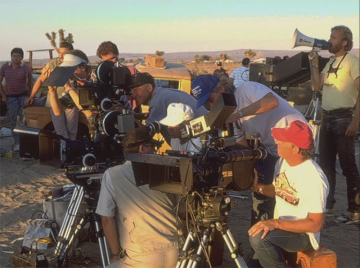
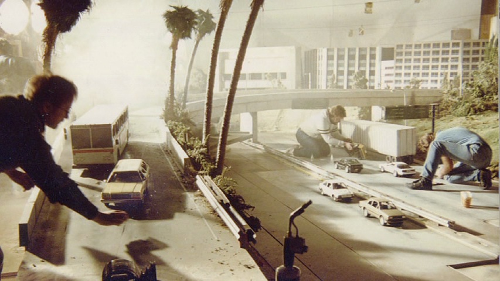
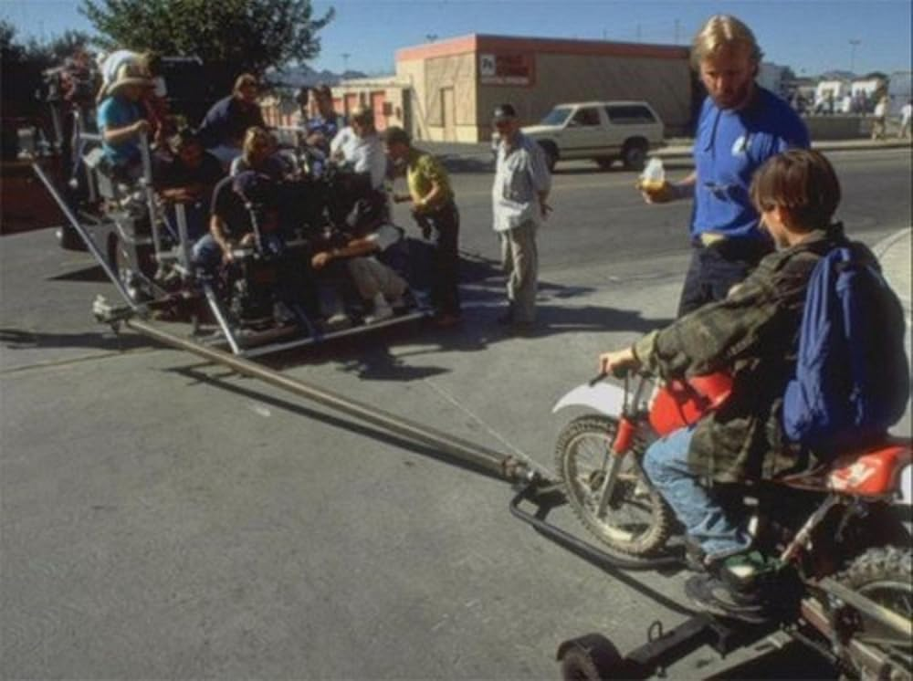
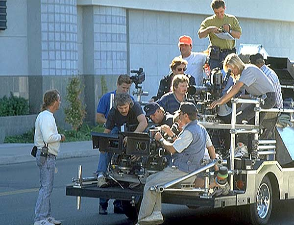
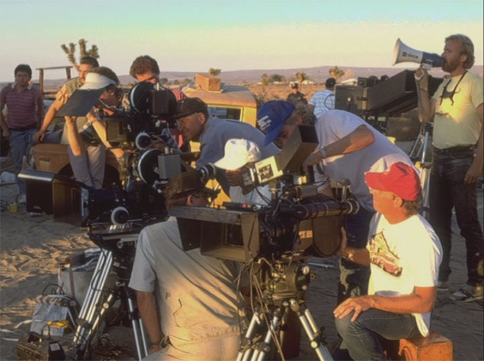
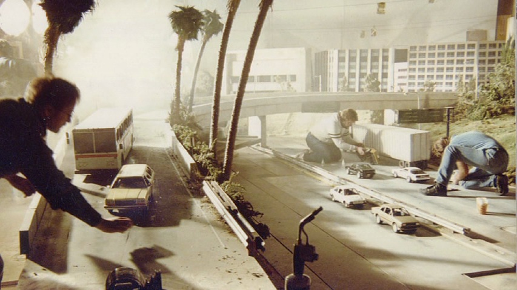
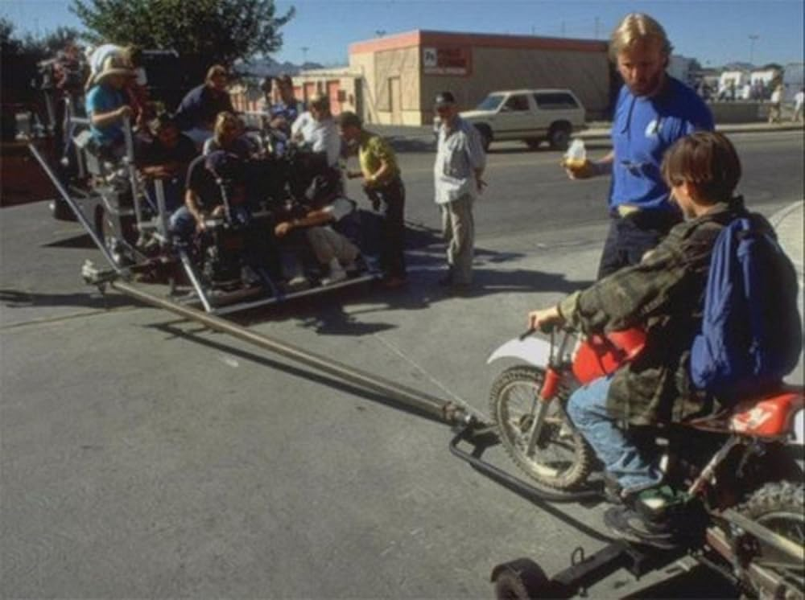
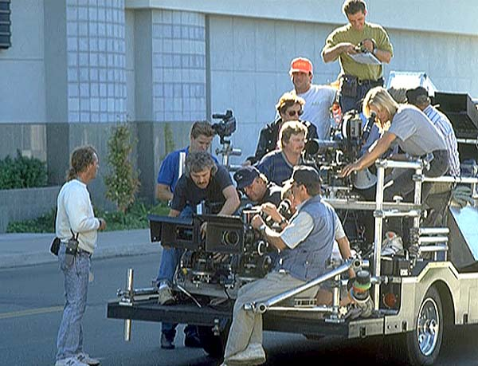

Terminator 2: Judgment Day

Я не дам тебе угнать этот мотоцикл, сынок
Сюжет
В 1995 году Джон Коннор живёт в Лос-Анджелесе с приёмными родителями. Его мать Сара Коннор с детства готовила его к будущей роли лидера Сопротивления человечества против Скайнета, искусственного интеллекта, который получит контроль над ядерным потенциалом Соединенных Штатов и начнет ядерную войну 29 августа 1997 года. Этот день будет известен впоследствии как «Судный день». Однако Сара была арестована и заключена в психиатрическую больницу за попытку взорвать компьютерную фабрику. Мир её сына рухнул: Джон дерзит своим опекунам, убегает из дома и прогуливает школу.
В 2029 году Скайнет отправляет нового Терминатора T-1000 в прошлое, чтобы убить Джона. T-1000 — это более совершенная модель, изготовленная из жидкого металла («мимикрирующий полисплав»), который дает ему возможность принимать форму и внешний вид практически всего, к чему он прикасается, мгновенно заращивать раны и превращать руки в оружие. T-1000 прибывает в 1995 год, убивает патрульного полиции, завладевает его оружием и принимает облик полицейского; он также использует полицейский компьютер, чтобы выследить Джона. В 1995 году никто не сможет справиться с боевым роботом такого уровня, но Джон Коннор из будущего послал перепрограммированного терминатора Модели 101, чтобы защитить себя в юности.
Пути Т-800 и Т-1000 пересекаются в поисках Джона в торговом центре. Рукопашная схватка роботов идёт с преимуществом Т-1000, но Т-800 с помощью мощного огнестрельного оружия временно шокирует Т-1000, после чего начинается погоня, и Джон с Т-800 вместе скрываются на мотоцикле. Опасаясь, что Т-1000 убьет Сару, чтобы добраться до него самого, Джон приказывает Терминатору помочь освободить её, обнаружив, что Терминатор должен выполнять его приказы.
Сара, узнав от врачей о появлении в городе человека, похожего на Терминатора, планирует побег из больницы. Т-1000 тоже появляется в психиатрической клинике, где лежит Сара, убивает охранника и принимает его облик. Тем временам Сара пытается бежать из клиники, но на пути к побегу встречает Т-800 и Джона, которые перехватывают её, после чего рассказывают правду об истории Скайнета. Т-1000 преследует их, но безуспешно, однако это убеждает Сару в необходимости довериться Т-800. Сара, несмотря на свой страх перед роботом, доверяет сыну, и следует за ним. Позже она узнает, что человеком, непосредственно ответственным за создание Скайнета, является Майлз Дайсон, инженер «Кибердайн системс», работающий над революционно новым микропроцессором. Именно этот процессор станет потом основой для Скайнета.
Сара, найдя приют у своего давнего друга, берёт у него оружие, чтобы убить Дайсона и не допустить наступления Судного дня. Джон приказывает роботу остановить её. Сара ранит инженера, но оказывается не в состоянии убить невинного человека на глазах его семьи. Появившиеся Джон и Т-800 и рассказывают Дайсону о будущих последствиях его работы. Они узнают, что большая часть его исследований является результатом обратной разработки повреждённого центрального процессора и правой руки предыдущего Терминатора, который пытался убить Сару в 1984 году. Убедив Дайсона, что проект должен быть остановлен, они врываются в здание Кибердайн, забирают процессор и манипулятор уничтоженного терминатора и устанавливают взрывчатку, чтобы разрушить лабораторию Дайсона. Прибывшие полицейские открывают стрельбу. Смертельно раненный инженер из последних сил удерживает в руке детонатор, давая друзьям и полицейским время уйти. Мощный взрыв уничтожает лабораторию.Т-1000 неустанно преследует главных героев, в конечном итоге загоняя их в угол на металлургическом комбинате.

T-1000 и Т-800 опять сражаются, и более продвинутая модель серьёзно повреждает и отключает Модель 101. Однако Терминатор вновь включается, используя резервный источник питания, застаёт противника врасплох и выстрелом гранатомёта отправляет его в чан расплавленной стали. Т-1000 отчаянно ищет форму, устойчивую при высоких температурах, но, не найдя её, погибает. Джон бросает руку и процессор оригинального Т-800 в чан. Сара выражает облегчение, что испытание закончено, но Терминатор объясняет, что для исключения обратной разработки он сам тоже должен быть уничтожен. Т-800 просит Сару помочь опустить его в чан с расплавленной сталью, поскольку сам он не может «самоуничтожиться». Джон, которому робот заменил отца, умоляет и приказывает Терминатору пересмотреть своё решение. Однако робот, имея в виду выживание человечества, отказывается подчиняться. Он прощается с людьми, обнимает плачущего Джона, а затем опускается в чан, поднимая вверх большой палец правой руки. Джон и Сара едут по шоссе, и голос Сары говорит за кадром: «Неизвестное будущее приближается. Я впервые иду навстречу ему с чувством надежды. Если машина, Терминатор, может понять ценность человеческой жизни, возможно, мы тоже сможем».
Терминаторы
Выберите модель для получения информации
Тип
- Инфильтрационный киборг
Назначение
- Устранение целей
- Защита приоритетных объектов
- Проникновение в человеческую среду
Конструкция
- Эндоскелет: Титан-танталовый сплав
- Покрытие: живая органическая ткань
- Зрение: инфракрасное + тактический HUD
- Источник питания: компактный ядерный элемент
- Система обучения: ограниченная (в фильме — разблокирована)
Физические характеристики
- Сила: значительно превосходит человека
- Выносливость: не ощущает боли
- Реакция: машинная, мгновенная
- Регенерация: ремонт эндоскелета возможен до критических повреждений
Вооружение
- Использует любое доступное оружие
- Способен применять транспорт и тяжёлую технику
- Предпочтение: огнестрельное оружие крупного калибра
Поведенческие особенности
- Холодная логика
- Отсутствие эмоций (изначально)
- Способен обучаться и перенимать человеческие модели поведения
- Строгое следование приказам приоритетной цели
Статус в фильме
- Перепрограммирован для защиты Джона Коннора
- Проявляет зачатки понимания человеческой ценности жизни
Тип
- Экспериментальный терминатор нового поколения (мимикрирующий полисплав — жидкий металл)
Назначение
- Устранение приоритетных целей
- Поиск и ликвидация лидеров Сопротивления
- Инфильтрация без необходимости маскировки органической тканью
Конструкция
- Материал корпуса: мимикрирующий полисплав (жидкий металл)
- Эндоскелет: отсутствует (цельнометаллическая структура)
- Мимикрия: способен копировать внешний вид, голос и поведение объектов
- Зрение: многоспектральное, с расширенной аналитикой
- Источник питания: неизвестен / интегрирован в структуру
- Система обучения: продвинутая, автономная
Физические характеристики
- Сила: превосходит T-800 в ближнем бою
- Выносливость: практически неуязвим для обычного оружия
- Реакция: сверхбыстрая, адаптивная
- Регенерация: мгновенная самовосстановление при некритических повреждениях
Вооружение
- Формирует холодное оружие из собственного тела (клинки, крюки, копья)
- Использует огнестрельное оружие без ограничений
- Может превращать конечности в ударные инструменты
Поведенческие особенности
- Абсолютно холодный расчёт
- Отсутствие эмпатии и эмоциональных реакций
- Высокая степень автономности
- Адаптация поведения под среду и жертву
- Не способен к пониманию человеческих ценностей
Статус в фильме
- Основной антагонист
- Не подлежит перепрограммированию
- Уничтожен в расплавленной стали
О фильме
Файл Skynet - Terminator 2
Основные данные
-
Имя файла: Терминатор 2: судный день
-
Год Выпуска: 1991
-
Режиссер: Джеймс Кэмерон
-
Жанр: Научная фантастика / Боевик
-
Продолжительность: 137 минут
-
Производство: Carolco Pictures
Финансы и влияние
-
Производственный бюджет: 102 млн долларов США
-
Кассовые сборы(мировые): 520 млн долларов США
-
Финансовый статус: Коммерчески успешен
Награды и признание
-
Премия "оскар" (1992):
- Лучшие визуальные эффекты
- Лучший грим
- Лучший звук
- Лучший монтаж звуковых эффектов
-
Номинации: отсутствуют (редкий случай: все номинации → победы)
-
BAFTA: Лучшие визуальные эффекты
-
Saturn Awards:
- Лучший научно-фантастический фильм
- Лучший режиссёр (Джеймс Кэмерон)
- Лучший актёр второго плана (Роберт Патрик)
- Лучшие спецэффекты
Статус в киноиндустрии
-
Технологическое влияние: Революция CGI и цифровых эффектов
-
Культовый статус: Признан классикой научной фантастики
-
Наследие: Определил визуальный стандарт экшен-фильмов 1990-х
Саундтреки
Музыка Terminator 2 стала частью визуального языка фильма. Индустриальные ритмы и холодные синтезаторы усиливают ощущение неизбежности.
-
Track_01 - Main Theme
Композитор: Brad Fiedel
Год: 1991
Жанр: Industrial / Synth
Контекст: Вступительные титры
0 : 00СИСТЕМНОЕ ПРИМЕЧАНИЕ
Оснавная тема фильма. Металлический ритм стал символом всей франшизы -
Track_02 - Guitars & Cadillacs
Композитор: Brad Fiedel
Год: 1991
Жанр: Rock / Score
Контекст: Проишествие в баре
0 : 00СИСТЕМНОЕ ПРИМЕЧАНИЕ
Редкий для фильма гитарный трек, добавляющий ощущения движиения и свободы -
Track_03 - Bad to the bone
Aртист: George Thorogood & The Destroyers
Год: 1982
Жанр: Blues Rock
Контекст: T-800 выход из бара
0 : 00СИСТЕМНОЕ ПРИМЕЧАНИЕ
Ироничный контраст: харизма терминатора под классический рок-хит -
Track_04 - You Could Be Mine
Aртист: Guns N' Roses
Год: 1991
Жанр: Hard Rock
Контекст: Сцена погони
0 : 00СИСТЕМНОЕ ПРИМЕЧАНИЕ
Энергичный трек, усиливающий хаос и темп сцен погони -
Track_05 - Sarah Connor's Dream
Композитор: Brad Fiedel
Год: 1991
Жанр: Ambient / synth
Контекст: Сцены снов Сары Коннор
0 : 00СИСТЕМНОЕ ПРИМЕЧАНИЕ
Атмосферный трек, отражающий внутренние страхи и напряжения Сары Коннор -
Track_06 - Its over goodbye
Композитор: Brad Fiedel
Год: 1991
Жанр: Ambient / Emotional synth
Контекст: Финальная сцена
0 : 00СИСТЕМНОЕ ПРИМЕЧАНИЕ
Меланхоличное завершение истории, подчеркивающее жертву Терминатора
Актёры
Съёмочная группа
 








- Джеймс Кэмерон
- Джеймс Кэмерон
- Уильям Уишер мл.
- Джеймс Кэмерон
- Б.Дж. Рэк
- Марио Кассар
- Стефани Остин
- Гейл Энн Хёрд
- Ван Линг
- Адам Гринберг
- Брэд Фидель
- Николас Р. Аллен
- Сандина Бэйло-Лэйп
- Фил Бенсон
- Кристофер Бойс
- Скотт Чандлер
- Крис Баррон
- Джозеф П. Лаки
- Марлен Стюарт
- Джон М. Двайер
- Конрад Бафф IV
- Марк Голдблатт
- Доди Дорн
- Ричард А. Харрис
- Боб Ахмансон
- Билл Бассо
- Ивэн Брэйнэрд
- Крис Кауэн
- Роб Бурман
- Брент Бэйкер
- Дэвид Бенеке
- Лен Бёрдж
- Крэйг Кэтон
- Ричард Дэвисон
- Диана Эйс
- Брэт Александр
- Эд Энджелл
- Пол Эндаун
- Рэндолл К. Бин
- Тони Алдерсон
- Скотт Э. Андерсон
- Шон Эпплгейт
- Гордон Бэйкер
- Джеймс Белкин